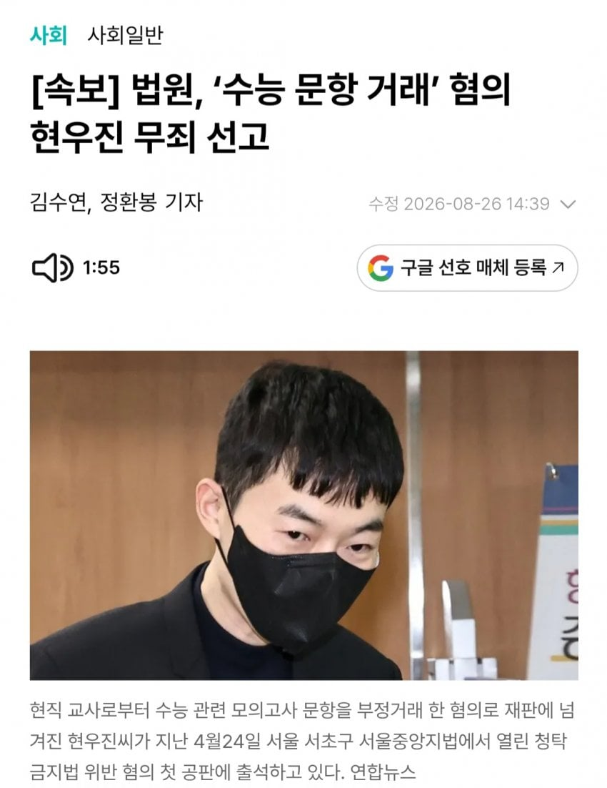

무죄
막말로 전국어디서나 달에 10만원도 안되는돈으로 저사람강의를 보는건데
상받아야하는거 아닌가?ㅋㅋㅋㅋㅋ

무죄
막말로 전국어디서나 달에 10만원도 안되는돈으로 저사람강의를 보는건데
상받아야하는거 아닌가?ㅋㅋㅋㅋㅋ
이건 '수능 문항 거래' 뉘앙스가 여론 대부분 차지했다고 생각함;
아하
요즘은 사설모의고사나 사설 문제집(일명 N제) 수요가 엄청 많음. 강사 한 명이 문제를 한달만에 수백개씩 만드는 건 불가능하니까 보통 외부에 문항 제작을 의뢰하고 돈 주고 사옴. 근데 이 구매 채널 중에 현직 교사가 있었던 모양. 그래서 교사한테 이렇게 큰 돈을 주고 문제를 사는 게 말이 되냐? 혹시 학교 시험 문제를 유출시키기 위해 준 돈이 아니냐. 부정청탁 아니냐는 혐의로 재판에 넘겨짐.
재판부의 판단은 그냥 문제를 많이 사서 큰 돈이 오간거지 문제 1개당 가격으로 보면 통상적인 거래가보다 높다고 볼 수 없다는 것. 그리고 학교 시험에 거래한 문항을 출제허지 않았다는 것. 그래서 청탁이 아니라 그냥 거래대금 지불로 보인대.
교사가 이런 일을 해도 되느냐? 일단 이건 교사의 징계 재판이 아니러 현우진의 부정청탁 재판이라서 재판에서 다투지 않았지만 굳이 따지자면....... 애매하네. 교사의 영리업무를 금지하기는 하는데 여기서 영리업무라는 게 계속성이 있는 것이어야 함. 일회성에 그치는 영립행위는 특별한 절차가 없이 할 수 있는 것 같음. 교사가 얼마나 오래, 반복적으로 거래했는지 모름.
상?
그럼 이제 사교육에서 교사들 문제 사서 예상 문제집 만들어 그 학교 학생들한테 팔아도 된다는거야?
이건 중간과정 생략하면 내신 출제 교사가 내신 예상 문제집 파는건데
ㄴㄴ 이번 재판에서도 확인한 사항인데 현우진이 구매한 문항이 학교 시험에서 출제되지 않았대. 그걸 근거로 청탁이 아니라고 판결함. 교사가 그런식으로 문제를 유출하면 청탁에 걸릴걸.
받을 상은 치명상 뿐이야
댓글 팀 쓰낭? ㅋㅋㅋ
대체 몇문제를 샀길래 4억임
모의고사용은 한 문제당 대략 24만원, 문제집용은 한 문제당 대략 13만원 쯤이라는듯.
한 사람 꺼만 대략 2000개를 산거야?? 문제 찍어내기 공장이네....
여러 명임
저거 한 교사들 겸직금지로 싹다 처벌 멕이면 좋겠네
공무원 규정이 걸면 걸리는 코걸이 귀걸이긴한데 1회성이면 문제가 없긴함. 다만 매번 규칙적으로 거래를 했다면 걸릴거임.
출판, 집필 활동이라고 볼 여지도 있기 때문에...
일단 징계는 주겠지만 행정소송 걸면 돌아올듯
사설 모의고사 만들려고 문항산건데
틀딱새끼들은 6평 9평 교육청모의고사 문제유출했다고 지랄거리더라
사설모의가 뭔지 모르는지 ㅋㅋ
킬캠이 500만원짜리 캠프다 ㅇㅈㄹ 할때 알아봄ㅋㅋ
붐업 왤케 많음 근데?
정떡비스무리해서
걍 돈많아서 눈꼴시런사람이 많은거아닝가?
기사 댓글창 가니까 죄다 정떡이길래 당연히 그거인 줄
저사람 처벌 하라고 한사람이 정치인이라고 정떡이라고 내리고 싶어 해서 그렇음
돈을 많이 벌고 유명해지면, 항상 억까가 많음,,,
무혐의도 아니고 무죄가 나왔네잉
재판에 갔으니까 무죄가 나오는거예용 / 무혐의는 수사절차단계 용어
그렇네요 제가 잘못알고 있었어요
문제거래로 4억이면 의심할순 있을듯. 무죄 나왔으니 다행이네.
조정식도 무죄겠지?
조정식은 사건 내용이 좀 다름
이번거는 무죄였어야 맞는거긴한데 글쓴이 첨언이 ㅂㅅ같네.
막말로 전국어디서나 달에 10만원도 안되는돈으로 저사람강의를 보는건데 상받아야하는거 아닌가? <-- 이러면 법은 왜있음? 좋은 사회적 영향이 있으면 그 사람의 부정을 벌하지 말자는거?
법원이 무죄라는데... 부정이 없잖아
너 첨언은 이번에 무죄지만 유죄판결이 나왔어도 저렴하게 강의를 볼 수 있게 해줬으면 상받아야된다로 읽힐 수 있잖아.
그건 상상의 영역이잖아ㅋㅋㅋㅋㅋ
재판을 빼고봤을때를 상정한 얘기였음
사교육의 거악취급을 받았었잖아
다음부턴 그냥 사족 달지 말자 ㅋㅋ
넵
정부 정책 비판했다고 운동권 카르텔로 몰려서 검찰에 기소
결과는 무죄 자판기ㅋㅋ 진짜 역사에 남을 시절이긴 했다
그때 개드립에도 ㅉㅉ 문제 거래를했어? 카르텔 맞네 하면서 은근슬쩍 동조하던 친구들 많았는데 말이지
사족이 좀...
와 이거억까인거 오늘알았다 ㅁㅊ
요지는 그냥 시장가로 문제 저작권 산게 왜 죄가 되냐 이거엿더라 ㅋㅋㅋ 당연히 무죄겟지.. 판 사람은 공직자겸직의무위반이나 다른걸로 엮일지도
ㅋㅋ 사는 사람이 있으니까 팔지
마약도 산사람 판사람 다 벌받는거 아녀?
문제를 사고 파는게 문제 되는 것도 아니고
그 교사들이 수능이나 내신에 문제가 되는 문제를 판게 아니라서 그렇지
이런일이었구나..
예전에 문제산거 들켜서 ㅈ됬다는 글만보고
무지성 비난했었는데
죄송합니다 센세..
ㄴㄴㅋㅋ법조인이라고 불릴만한 전문직이나 공무원은 아니었고 지금은 아예 다른일함ㅋㅋ